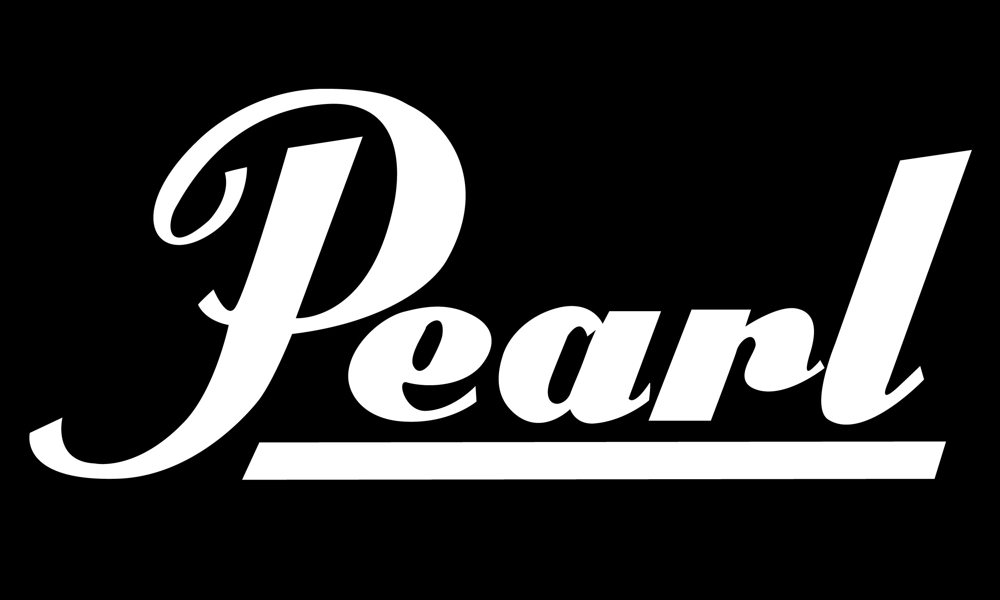
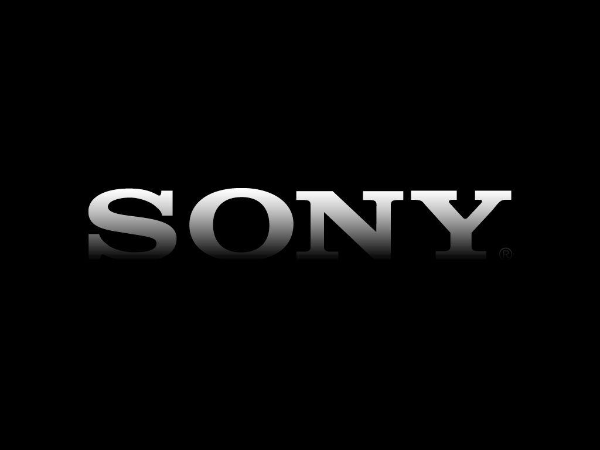

- 
- 
From October 25th to 27th, 2023, Yamaha is gearing up to unveil a compelling array of products at InfoComm 2023. This highly anticipated event is set to take place at the prestigious Jio Convention Centre in Mumbai and will showcase Yamaha's latest innovations, including the DM series of digital mixing consoles and video collaboration systems with the names "CS-800" and "CS-500."
Yamaha's presence at this event promises to deliver cutting-edge technology, making it an absolute must-attend for industry professionals and enthusiasts alike.
its debut in Mumbai, the company is poised to present an exciting new product lineup. The centrepiece of this offering is the DM7C & DM3 series of professional digital mixers, seamlessly merging the finest elements of previous systems with innovative features. These mixers are characterized by their compact, powerful, ergonomic, flexible, and expandable design, excelling in various scenarios and redefining control flexibility in applications like live music events, corporate functions, theatre productions, broadcasting, streaming, and hybrid mixing.
Whether your needs revolve around exceptional control or flexibility, the DM series can be separated and employed in distinct locations while remaining integral components of a comprehensive mixing system. This innovative approach caters to a diverse range of audio needs and unlocks new possibilities for various applications.
At InfoComm, Yamaha is set to unveil the CS-800 video soundbar, certified for Microsoft Teams, and the CS-500 video collaboration system. The all-in-one CS-800 integrates a hexa-microphone, a 4K camera, a built-in loudspeaker, and HDMI connectivity for remote conferencing. Meanwhile, the CS-500 comprises a microphone, camera, and HDMI output, seamlessly adapting settings for a new era of flexibility in video collaboration.
With great excitement, Yamaha is committed to presenting groundbreaking technologies, consistently pushing the boundaries of innovation in live performances, installed solutions, and remote conferencing, thus elevating these experiences to unparalleled levels of excellence.
We are thrilled to showcase our most recent products and solutions, introducing cutting-edge technologies to an even broader array of applications. Yamaha's celebrated spirit of innovation consistently expands the horizons of live performances, installed solutions, and remote conferencing, propelling them to new heights of excellence.